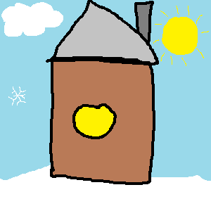

Lehel on kasutatud map area käsud
Palun kliki hiirega pildi erineva alale

Aken
Aken on hoone, sõiduki või muu objekti seinas, katuses või ukses paiknev ava, mis tavaliselt võimaldab lasta sisse valgust ja õhku.